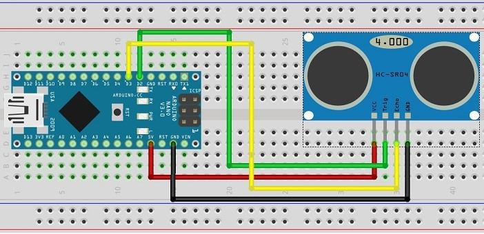
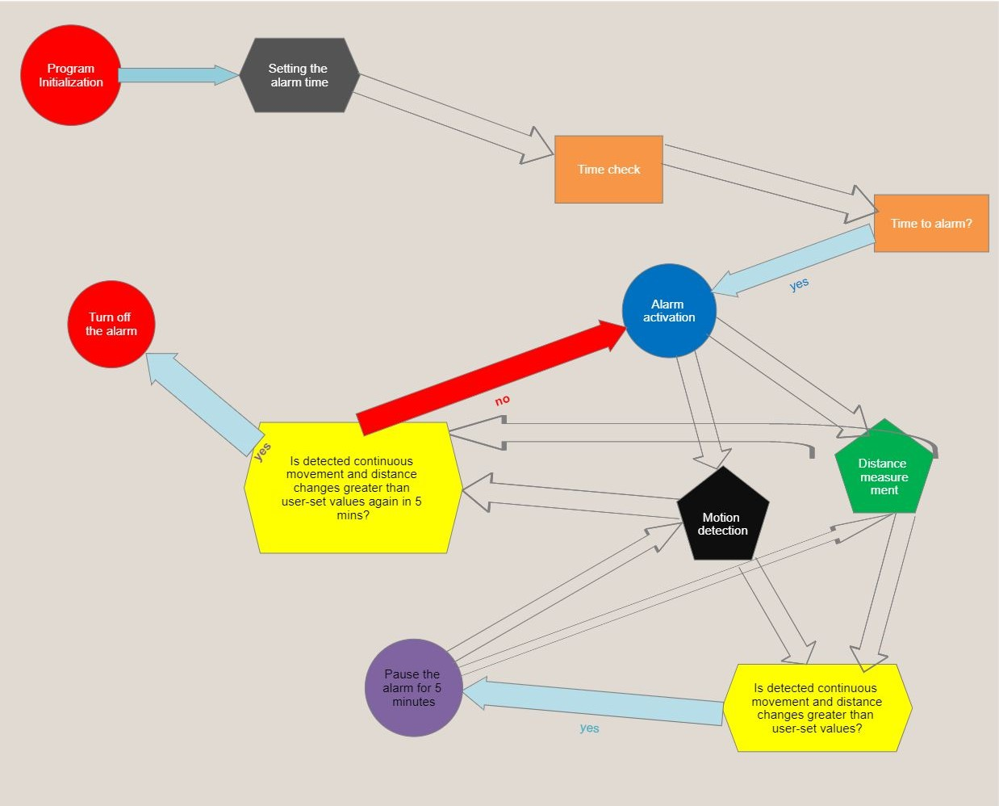
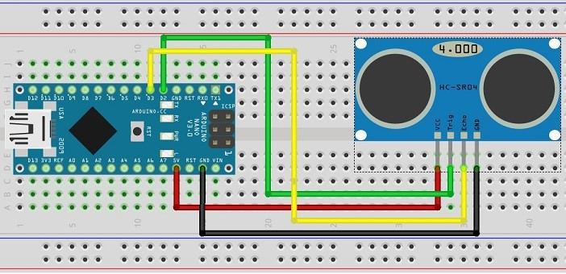
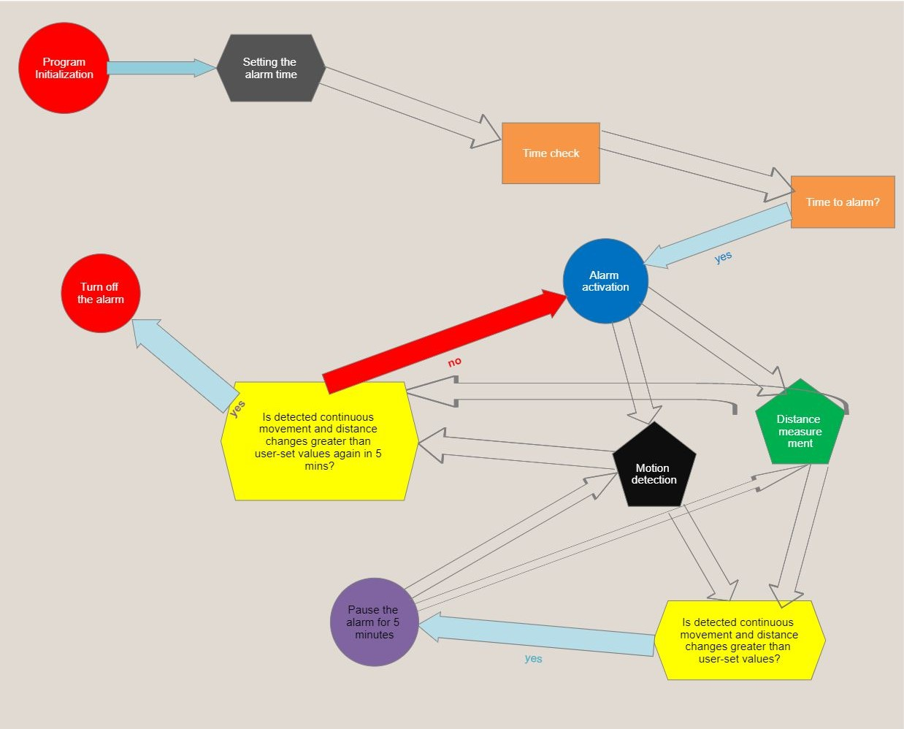
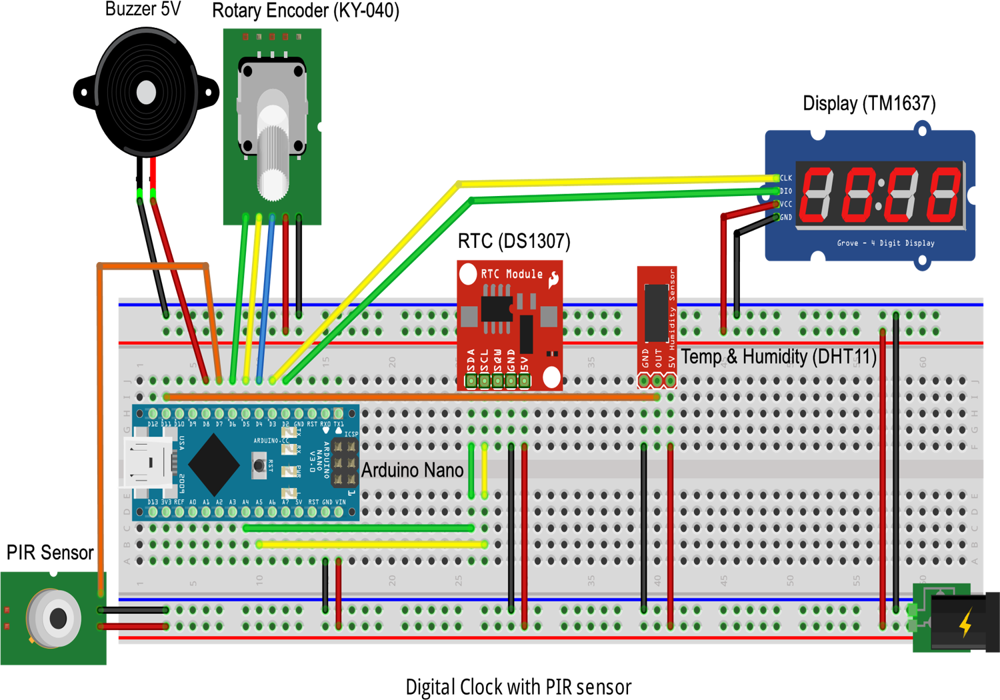
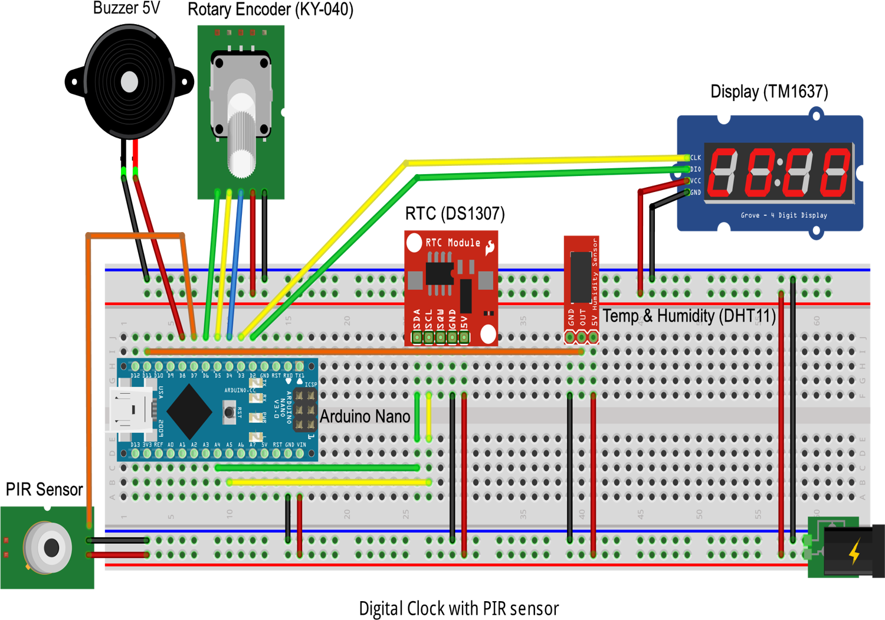

Nex-Gen Alarm Clock
Nex-Gen Alarm Clock
Hi, I am Harun. A student of professional bachelor ICT, phase 1.
My project is a Arduino-based digital alarm clock. I have tried to combine Electronics and ICT to make a user friendly device. It will be a solution to problems about not being able to wake up when required. It will check if you wake up or not by detecting movements thanks to its sensors. And will act according if you woke up or not.
 



 
